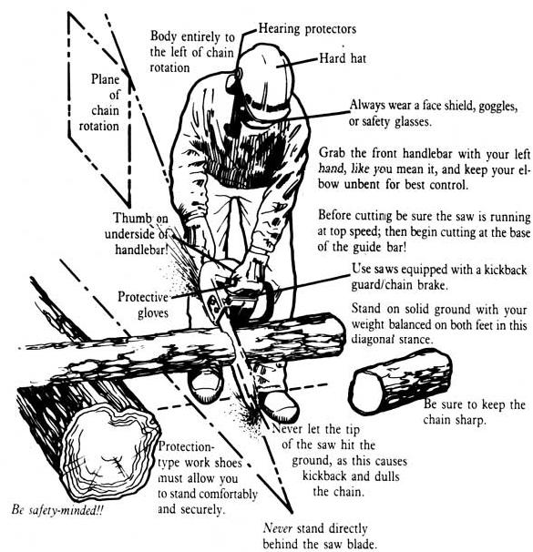

Safety, Selection, Milling, and More!
Stopping By Woods...
Chain Saw Sense
Chain Saw Lumber Mill
Chain Saw Mini-Mills
Chain Saw Skills
When it corner time to start cutting this winter's firewood supply, your top priority should be. . .
The importance of chain saw safety to woodcutting professionals is evidenced by the fact that practically every article in our special chain saw section makes some mention of this life-and-limb-saving topic. But to emphasize it even more (can safety ever be overemphasized?), we ware t,, kick thingsoff with a brief discussion of the basics of safe chain save use. The rest is up to you.
More and more people-especially those trying to achieve some measure of independence from the energy brokers-are discovering the usefulness of the modern lightweight chain saw for outdoor tasks ranging from cutting fuel for the family woodstove to clearing woodland tangles for a new garden patch. But this valuable power tool can be-is-dangerous if not used properly and treated with informed respect. According to the U.S. Consumer Product Safety Commission, some 69,423 Americans were injured seriously enough in chain saw accidents in 1982 to be treated in hospital emergency rooms. Of those seen in ER's, 2,221 were hurt badly enough to be admitted to the hospital ...and 139 were pronounced dead on arrival.
Alarming statistics? You bet. But worse yet is the fact that the majority of those mishaps and fatalities could easily have been prevented, since they were caused by lack of familiarity with the equipment or careless operation of it.
I have long been convinced that almost all chain saw accidents could be avoided if operators would adhere to a few commonsense safety rules. And to help that conviction become a reality, I've drawn up a list of basic chain sawing do's and don'ts for woodcutters who, like me, have no intention of ever becoming accident statistics.
CHAIN SAW DO'S
*When shopping for new chain saws or accessories, consider those with built-in safety features such as automatic chain brakes, bar-tip guards, antikickback guide bars, antikickback chains, and hand guards.
*Read your owner's manual carefully, reviewing it before each woodcutting season to familiarize yourself with your saw and its proper and safe operation.
*Keep your chain saw in perfect working order; a sharp chain and well-maintained saw make safe operation more certain.
*Adjust the chain tension frequently; a loose chain can fly off the guide bar.
*Make sure that observers and helpers stay clear of the work area. (Very young "helpers" are especially vulnerable to injury.)
*Keep bare hands away from a hot saw-especially the muffler.
*Be certain that the chain stops turning when the throttle is released. Over 15°70 of all injuries are due to chains that don't stop when they're supposed to. (You can probably correct this problem by adjusting the idle speed.)
*Be careful when fueling your saw ...allow the machine to cool before adding gasoline, and wait for a better time and place to have a smoke.
*Be cautious about shock when using electric chain saws. Machines that aren't double-insulated must be used only with proper threewire extension cords and threeprong receptacles.
CHAIN SAW DON'TS
*Never carry a running saw. It takes only a moment to start it again when you reach vour new working area.
*Never place a running `.'.P saw on the it, ,1,:1!11 walk away from ; *To avoid kickback, never allow the tip of the guide bar to coma. anything.
*Never allow anyone to use a chain saw who isn't fair. familiar with its proper operation.
*Never work alone; if you're injured, you'll need help
*Don't fell large trees on a windy day.
*Never cut with your chain saw held above waist height, t-( won't be able to control kickback.
*Never use a chain saw when you're tired; fatigue can cause t1-slowness and the sloppiness that often precede loss of control o, .! accidents.
*Don't use a chain saw (or any other machinery or tools, for that matter) if you've been drinking or have used any drugs that can cat(., drowsiness. One slip in concentration can lead to a trip to the em,, gency ward.
*Never start your chain saw until you've donned the proper sate clothing: heavy leather gloves, heavy leather boots (preferably steel toed), long pants, long-sleeved shirt (with cuffs buttoned and t;: tucked in), and eye and ear protection. Professional chain sawyers further cut their risks by wearing a leather apron or chaps and a construction worker's hard hat (or one of the new helmet/ear and e_. protection units).
*Never stand directly behind your saw. Rather, stand off to the left side so that if the bar kicks up it won't be directly in linc with your chest and head.
*Don't allow your left elbow to bend while you're sawing; if your machine tries to kick up, you'll need all the straight-arm power you can muster in order to control it.
*Never allow legs or feet (yours or anyone else's) to get beneath. what you're sawing.
For more information on the safe and sane operation of one of the most useful-and potentially dangerous-outdoor power tools we have today, give the accompanying illustrations a good look-see.
|
 |
|
|